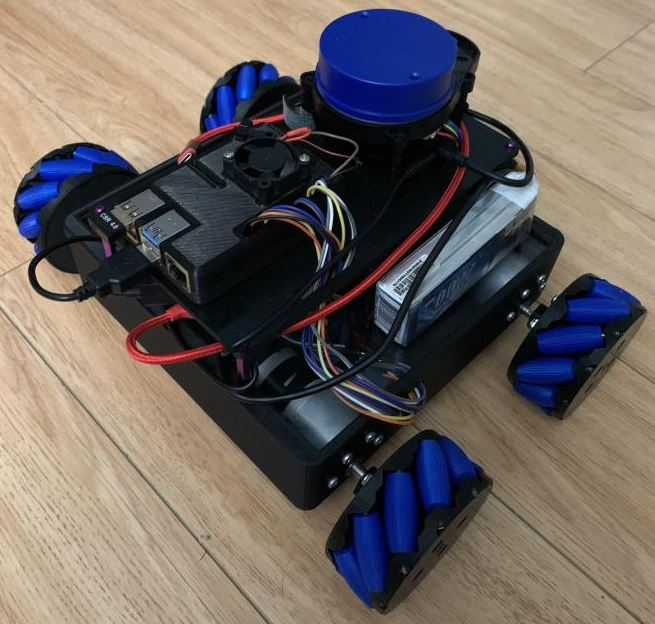
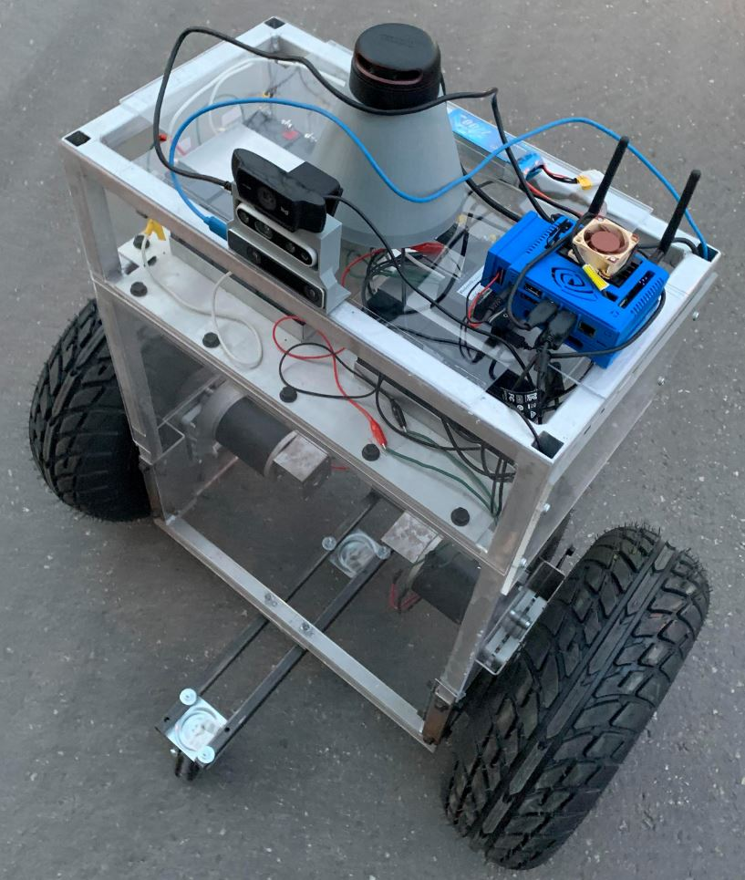
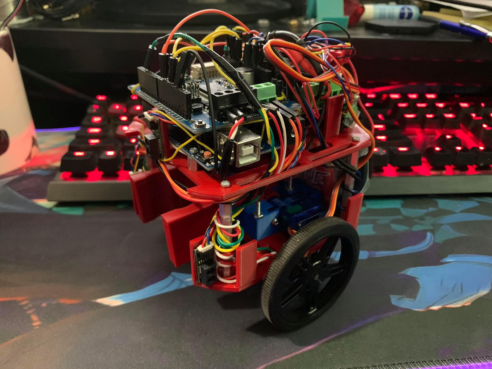
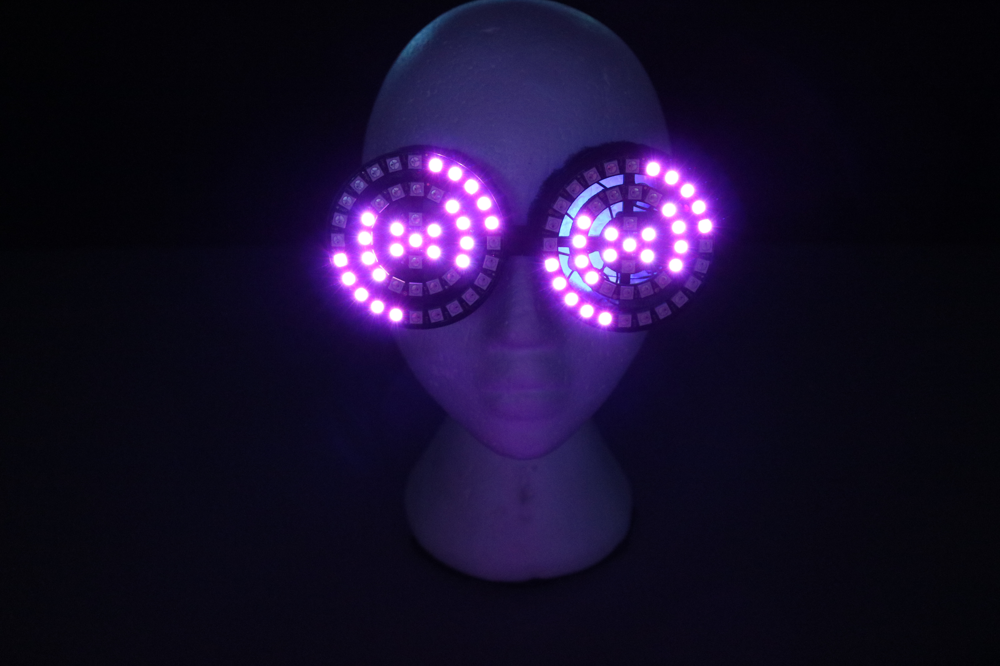
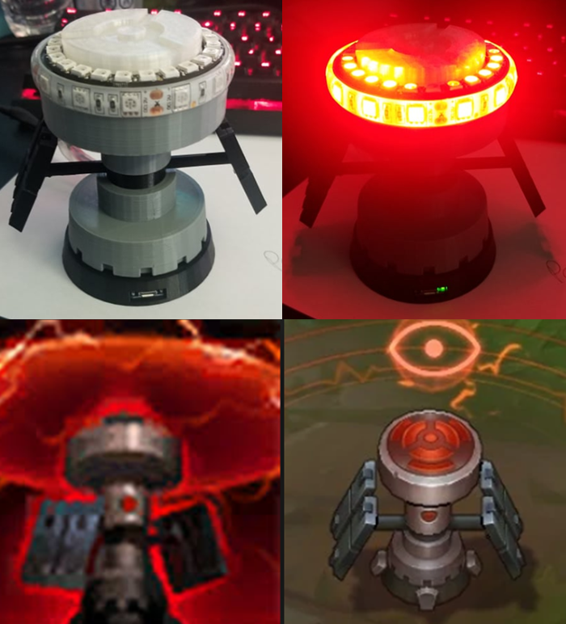
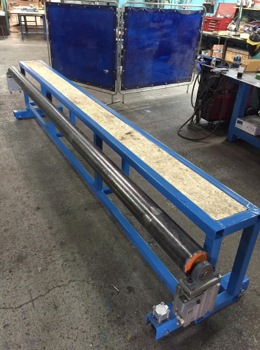

Hello! My name is Ivan Mak and I am a recent graduate of mechatronics engineering at Ontario Tech University. As a mechatronics student, I have been exposed to projects that deal with mechanical, electrical, and software design. The world of robotics has always fascinated me and witnessing the different innovative technologies in industries around the world is what motivates me to learn and create my robotics applications/platforms. I want to be a part of the community of robotics engineers who continue to re-design technologies that make a difference.
You can view my resume here!
SKILLS
- ROS (Robotic Operating System)
- Python
- C++
- MATLAB/Simulink
- Siemens NX
- Linux
- SolidWorks
- Mechanical Design
- Embedded Systems
- Control Systems
- 3D Printing
- GIT
PROJECTS

Autonomous ROS Robot (On-going)
Currently an on-going project for a ROS based mobile robot. The goal is to use the ROS navigation stack along with the YDLiDAR X4 laser scanner to have the Mecanum wheel drive completely autonomous while avoiding all walls and obstacles. The chassis and Mecanum wheels were designed and modeled in Siemens NX and then 3D printed in Black PLA. After that, I will be adding a depth camera and playing around with objection recognition using OpenCV.

Two Wheeled Self-Balancing Robot
Two-wheeled self-balancing robot is capable of object detection of vehicles using NVIDIA Jetson Nano and TensorFlow Python Library. Generated 3D point cloud maps using ROS Rviz with IntelSense Depth and Tracking cameras for navigation. Programmed 2D SLAM with 360-degree RPLiDAR A2 laser with hector slam. The chassis is made out of aluminum and welded together while many of the component brackets were modeled in SolidWorks and 3D printed in PLA.

Autonomous Maze Solving Robot
Arduino based robot to autonomously navigate through a given maze using 4 IR sensors and a 9-DOF inertial measurement unit. The challenge was to have the robot navigate throughout the maze without knowing the layout. We had to implement a maze solving algorithm as well as worry about the control system for the robot so that it wouldn't drive into the walls. After successfully navigating through 2 floors, the ending point also had a small lego man that the robot had to autonomously detect and secure.

Arduino LED Glasses
One of my first Arduino projects was making these LED glasses. The design of the overall frame was modeled in Siemens NX and then later 3D printed in black PLA. The glasses are powered by a small 1S 800mAH LiPO battery, while the LEDs are programmed through a small Adafruit microcontroller, which is also hooked up to a LiPO USB charging board. A button is used to cycle through the different patterns as well as the colors.

LED Control Ward (League of Legends)
I used SolidWorks to create a 3D model for the control ward item from the popular game League of Legends. The ward is designed to be powered off a Personal Computer power supply and is meant for a decoration for someone with a PC that has a tempered glass case. The top LED's rotate around in a circle simulating how the ward works in the game and is programmed in C++ with a microcontroller.

Pneumatic Lifting Table
Re-designed pneumatic lifting table to be more compact. The table was modeled in Siemens NX. There are two actuators on each side to elevate the roller so that roof and wall panels could slide across the tables to the next part of the assembly line.
Get In Touch
I would love to get to know you! Leave a message or send me an email and I will get back to you!
{kind=link}
{kind=link}
{kind=link}
{kind=link}
{kind=link}
{kind=link}